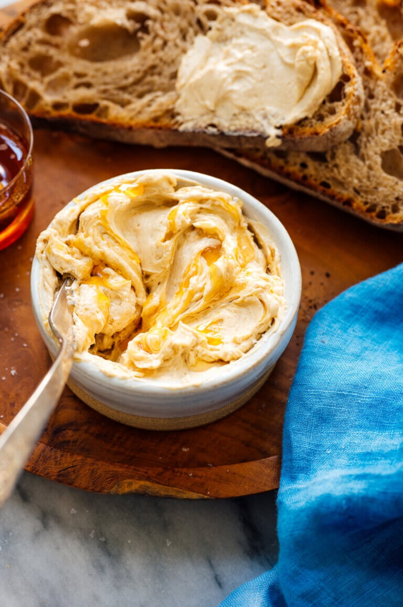

Honey Butter Recipe

- One stick of unsalted butter (4 ounces or 8 tablespoons), softened
- 3 tablespoons honey
- ¼ teaspoon ground cinnamon
- ⅛ teaspoon fine salt
- For garnish: Drizzle of honey, and a sprinkle of flaky sea salt or kosher salt
- In a 2-cup liquid measuring cup (or other small, shatter-proof mixing bowl with tall sides), combine
the softened butter, honey, cinnamon and salt.
- Using a hand mixer, whip the ingredients together until the butter is light and fluffy.
- Transfer the mixture to a small serving bowl. Lightly drizzle honey on top, followed by a little sprinkle of flaky salt or kosher salt.
- Serve promptly, or refrigerate for later (let the mixture come back to room temperature before serving).
Leftovers keep well in the refrigerator, covered, for up to 5 days.